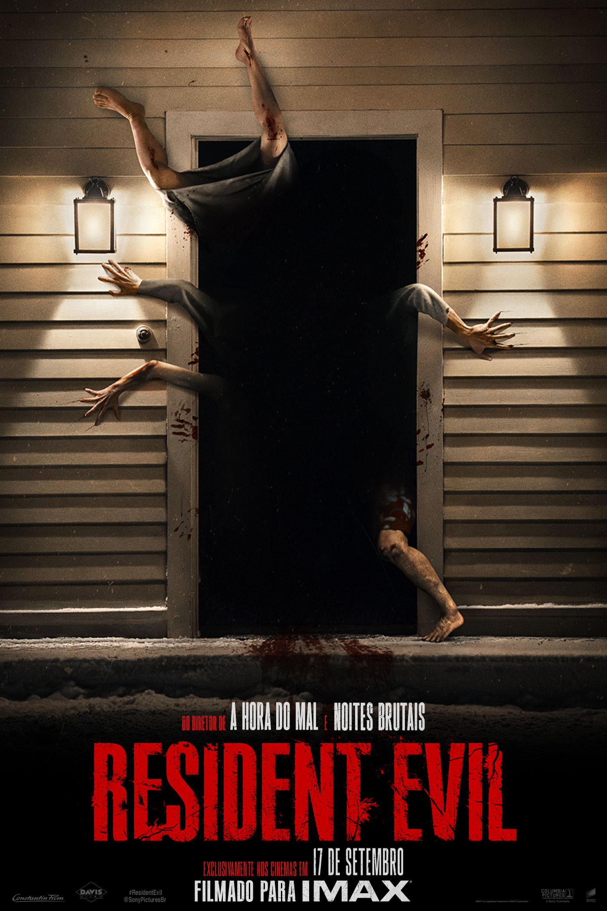
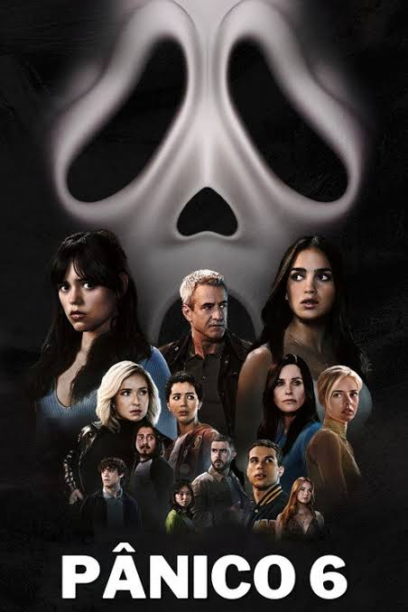
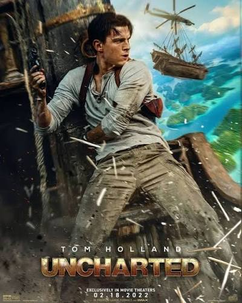
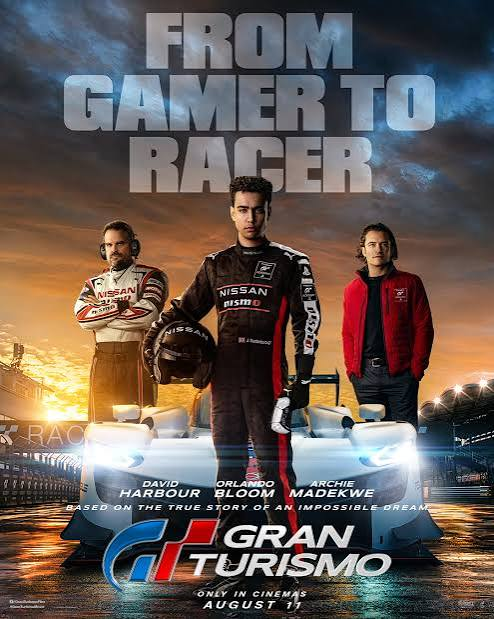
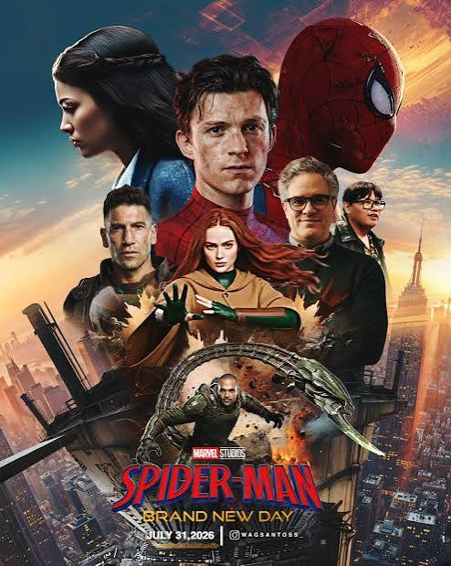
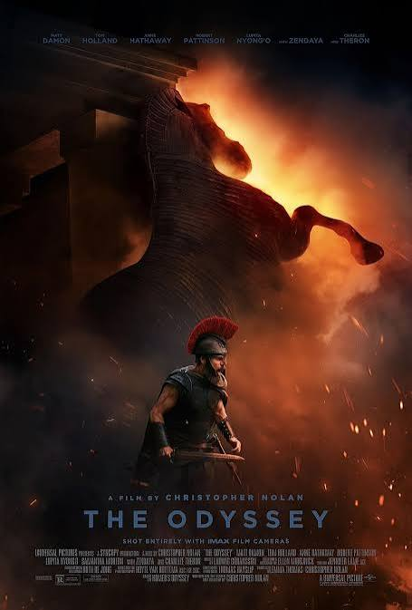

RESIDENT EVILTerror • AçãoResident Evil (2026)
Bryan, entregador de suprimentos médicos, acaba envolvido em uma noite aterrorizante e precisa lutar para sobreviver em meio ao caos.
Sinopse oficial ↗ESPECIAL DE CINEMA
Uma seleção de aventuras, mistérios, adrenalina e mundos extraordinários.
Explorar filmes ↓ESCOLHA SUA PRÓXIMA SESSÃO

RESIDENT EVILTerror • AçãoBryan, entregador de suprimentos médicos, acaba envolvido em uma noite aterrorizante e precisa lutar para sobreviver em meio ao caos.
Sinopse oficial ↗ ASSASSIN'S CREEDAção • Aventura
ASSASSIN'S CREEDAção • AventuraPor uma tecnologia que acessa memórias genéticas, Callum revive experiências de seu ancestral Aguilar na Espanha do século XV e descobre a disputa entre Assassinos e Templários.
Sinopse oficial ↗
PÂNICO VITerror • SuspenseQuatro sobreviventes deixam Woodsboro e tentam recomeçar em Nova York, mas Ghostface reaparece e inicia uma nova perseguição.
Sinopse oficial ↗
UNCHARTEDAventura • AçãoNathan Drake é recrutado por Sully para encontrar um tesouro perdido ligado a Fernão de Magalhães. A busca vira uma corrida cheia de pistas e perigos.
Sinopse oficial ↗
GRAN TURISMODrama • EsporteInspirado na história real de Jann Mardenborough, um adolescente transforma sua habilidade no jogo em oportunidade para se tornar piloto profissional.
Sinopse oficial ↗
HOMEM-ARANHAAção • Super-heróiPeter Parker combate o crime em Nova York, onde quase ninguém se lembra dele. Uma mudança física inesperada ameaça sua existência.
Informações oficiais ↗
A ODISSEIAÉpico • AventuraInspirada no poema atribuído a Homero, acompanha a longa jornada de Odisseu para voltar para casa após a Guerra de Troia, enfrentando perigos e desafios.
Site do estúdio ↗CONSULTA RÁPIDA
| Filme | Ano | Gênero | Tema |
|---|---|---|---|
| Resident Evil | 2026 | Terror / Ação | Sobrevivência |
| Assassin's Creed | 2016 | Ação / Aventura | Memórias e sociedades secretas |
| Pânico VI | 2023 | Terror / Suspense | Investigação e perseguição |
| Uncharted: Fora do Mapa | 2022 | Aventura / Ação | Caça ao tesouro |
| Gran Turismo | 2023 | Drama / Esporte | Sonho e automobilismo |
| Homem-Aranha: Um Novo Dia | 2026 | Super-herói | Identidade e responsabilidade |
| A Odisseia | 2026 | Épico / Aventura | Retorno e superação |
Sinopses resumidas para fins educativos. Consulte os sites oficiais para atualizações.
QUEM CRIOU ESTE SITE?
Olá! Sou Nadson Dias, estudante de Engenharia de Software e entusiasta de tecnologia, programação e cinema. Criei este projeto para praticar HTML e CSS, organizar informações sobre filmes e aprender a transformar ideias em páginas para a internet.
Este trabalho mostra como a programação pode ser usada para comunicar, pesquisar e criar experiências visuais.
“Cada história abre uma janela para um mundo novo. Aprender a criar também é aprender a imaginar, experimentar e evoluir.”— Nadson Dias